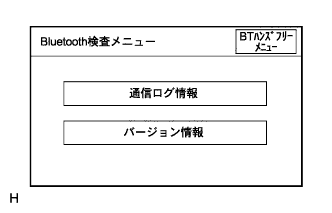
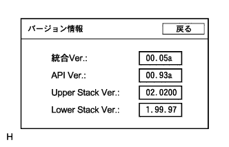
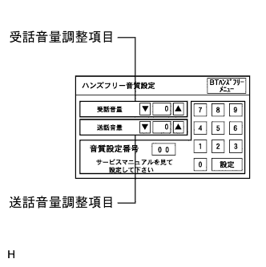

).
).Hands-free System Diagnosis System |
).Start diagnosis (see)
Diagnosis Cancellation (see)
 |
| Display | Description |
|---|---|
| Bluetooth Check | Displays the Bluetooth check screen |
| Hands-free Sound Quality Setting | Displays the screen for setting hands-free sound quality |
 |
Bluetooth Check
Start diagnosis and display the diagnosis inspection menu screen.
Select "BT Hands-free Check" on the diagnosis check menu screen to display the BT hands-free check menu screen.
Select "Bluetooth Check" on the BT hands-free check menu screen to display the Bluetooth check menu screen.
Select "Version Information" on the Bluetooth check menu screen to display the version information screen.
 |
Check the version information.
| Display | Description |
|---|---|
| Integrated Ver. | Version of the entire Bluetooth module software; software is managed by the integrated version |
| API Version Information Display | Indicates the version of the API software |
| Upper Stack Version Information Display | Indicates the version of the Upper Stack software |
| Lower Stack Version Information Display | Indicates the version of the Lower Stack software |
 |
Hands-free Sound Quality Setting
Start diagnosis and display the diagnosis inspection menu screen.
Select "BT Hands-free Check" on the diagnosis check menu screen to display the BT hands-free check menu screen.
Select "Hands-free Sound Quality Setting" on the BT hands-free check menu screen to display the hands-free sound quality setting screen.
Operate the screen switches to adjust the volume.
| Item | Display Content |
|---|---|
| Receiving Volume Adjustment Item | Adjusts the receiving volume (other party's voice heard by you) during hands-free calls |
| Transmitting Volume Adjustment Item | Adjusts the transmitting volume (your voice heard by the other party) during hands-free calls |